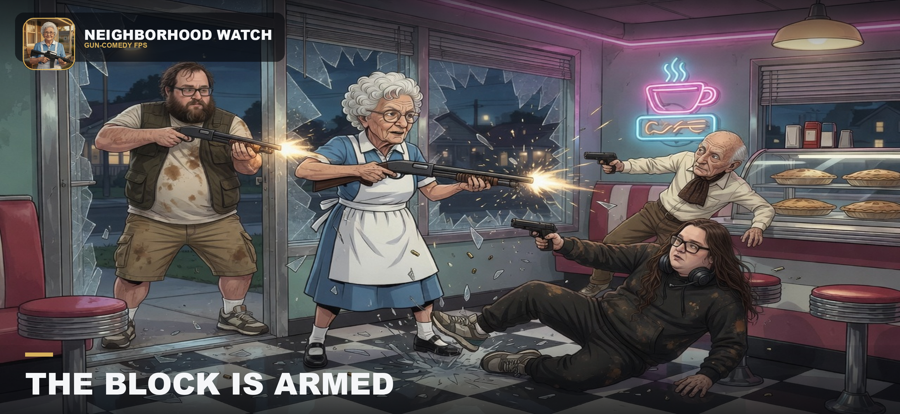

1. Choose your loadout
Pistols, SMGs, rifles, shotguns, snipers, explosives, a combat knife, clamp-on sights, and a laser. Pickups spawn across each map.
A gun-comedy FPS deathmatch. Eleven original arenas, a gun range, up to ten bots, and online free-for-all. Touch controls built for landscape play.

Pick an arena, set bot count, game mode and frag limit, then fight.
Pistols, SMGs, rifles, shotguns, snipers, explosives, a combat knife, clamp-on sights, and a laser. Pickups spawn across each map.
Offline matches against up to ten AI opponents. Normal, Advanced, or Hardcore. Practice aim, routes, and weapon timing — no account required.
Host or join a lobby with a party code. Local-network discovery when everyone is on the same Wi‑Fi.
Research Facility, Hydro Dam, Archives, Industrial Complex, Stone Temple, Night Streets, Command Bunker, Missile Silo, Miami Yacht, Mega Mart, Maple Court — original geometry. The gun range is for practice, optics, and lasers.
Processing tanks, archive stacks, bunker cells, and silo gantries built for vertical fights.
Dam watchtowers, moonlit streets, a Miami yacht at the marina, Maple Court backyards, and temple courtyards.
Landscape controls, hidden home indicator, night vision, and a score overlay that stays out of the crosshair.
Six operatives and the factory gun finish are free. Extra operatives are $3.99. Solid finishes $1.99, animated finishes $2.99. Restore Purchases is in Settings → Profile. No loot boxes, no ads, no voice chat.
ContactNot affiliated with Nintendo, Rare, or any Bond franchise. Neighborhood Watch is an original game by Solution Sidekick LLC. Arenas reconstruct recognizable themes with original art — they are not measured recreations.